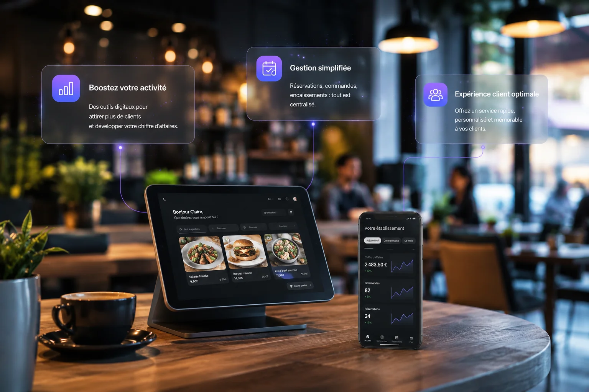

Lyon est l'une des capitales gastronomiques de France. La concurrence entre restaurants, bars, brasseries et salons de thé y est féroce. Dans ce contexte, un site vitrine professionnel n'est plus un luxe — c'est un outil commercial direct qui peut faire la différence entre une table pleine et une salle vide un soir de semaine.
Pourquoi une fiche Google Maps ne suffit pas
Beaucoup de restaurateurs lyonnais s'arrêtent à la fiche Google Business. C'est un bon départ, mais c'est insuffisant. La fiche Google affiche vos horaires, votre adresse et quelques photos — elle ne raconte pas votre histoire, ne présente pas votre carte complète, ne donne pas envie de réserver plutôt qu'ailleurs.
Un client qui hésite entre deux restaurants va souvent trancher en visitant leur site respectif. Celui qui a un site soigné avec de belles photos de plats, une carte lisible et une ambiance bien rendue donne confiance. Celui qui n'a qu'une fiche Google laisse le doute s'installer.
De plus, de nombreux sites de réservation comme La Fourchette ou Tripadvisor intègrent un lien vers votre site. Si ce lien mène vers rien, vous perdez des conversions directes.
Ce que doit contenir le site d'un restaurant ou bar à Lyon
Un bon site vitrine pour un établissement de restauration répond à une question simple : est-ce que j'ai envie d'y aller ? Pour y répondre positivement, voici ce qu'il doit contenir.
Une galerie de photos appétissante
C'est l'élément le plus important. Des photos de vos plats, de votre salle, de votre terrasse, de votre bar. Pas des photos de stock génériques — de vraies photos de votre établissement. Un photographe culinaire pour une demi-journée coûte entre 200 et 500€ et rentabilise votre site plusieurs fois en quelques semaines.
Votre carte ou menu
- La carte complète, idéalement en texte et non en PDF — le PDF n'est pas indexé par Google et illisible sur mobile
- Les formules du midi et du soir clairement indiquées
- Les prix affichés — un client qui ne trouve pas les prix part chez un concurrent
- La mention des allergènes si possible — ça rassure et c'est une obligation légale
Votre ambiance et votre histoire
Qui êtes-vous ? D'où vient votre cuisine ? Quel type d'expérience proposez-vous ? Un restaurant gastronomique, un bar à cocktails, un salon de thé cosy — chacun a une identité forte à mettre en avant. Cette page "À propos" crée le lien émotionnel qui fait passer le visiteur du site au client assis à votre table.
Vos horaires et votre localisation
Ça semble évident mais beaucoup de sites ne les affichent pas clairement. Horaires d'ouverture, jours de fermeture, adresse exacte avec un plan intégré, numéro de téléphone cliquable sur mobile. Un visiteur qui ne trouve pas ces informations en cinq secondes ferme l'onglet.
Un moyen de réserver facilement
- Un numéro de téléphone bien visible
- Un lien vers votre système de réservation en ligne si vous en avez un
- Un formulaire de demande de réservation pour les groupes ou événements privés
Le SEO local, un levier décisif dans la restauration lyonnaise
Chaque jour, des milliers de personnes tapent sur Google des requêtes comme "restaurant Lyon 2", "bar à cocktails Vieux-Lyon", "salon de thé Lyon Part-Dieu" ou "brasserie terrasse Lyon". Ces recherches ont une intention d'achat immédiate — la personne qui cherche veut manger ou boire quelque chose ce soir ou ce week-end.
Un site bien structuré et optimisé pour ces requêtes locales peut vous amener régulièrement des couverts supplémentaires sans payer de publicité. C'est un investissement qui travaille pour vous 24h/24, même quand votre salle est fermée.
Pour maximiser votre visibilité locale, combinez votre site vitrine avec une fiche Google Business complète et régulièrement mise à jour, des avis clients sollicités activement, et si possible quelques backlinks depuis des blogs culinaires lyonnais ou des guides de restaurants de la région.
L'importance du design dans la restauration
Le design de votre site doit être cohérent avec l'expérience que vous proposez en salle. Un restaurant gastronomique avec un site chargé et mal organisé crée une dissonance qui nuit à votre image. Un bar décontracté avec un site trop austère rate le cible.
Les couleurs, les typographies, les photos, la fluidité de navigation — tout doit raconter la même histoire que celle que vit votre client quand il pousse la porte de votre établissement. C'est ce qu'on appelle la cohérence de marque, et dans la restauration, elle compte autant qu'une belle assiette.
Votre site vitrine est le premier couvert que vous dressez pour votre client. Faites en sorte qu'il donne envie de s'asseoir.
Ce que ça coûte concrètement
Un site vitrine professionnel pour un restaurant ou bar à Lyon coûte à partir de 450€ TTC selon le nombre de pages, le niveau de personnalisation et les fonctionnalités souhaitées. Nous établissons un devis gratuit et personnalisé selon votre projet. Si vous souhaitez déléguer l'hébergement, la maintenance et les mises à jour de votre carte après livraison, un abonnement optionnel est disponible à partir de 39€ par mois — sans engagement.
Pour remettre ça en perspective : si votre site vous ramène deux couverts supplémentaires par semaine à 25€ en moyenne, il est rentabilisé en moins de deux mois. Et dans la réalité, un site bien référencé sur les bonnes requêtes lyonnaises en amène bien plus.